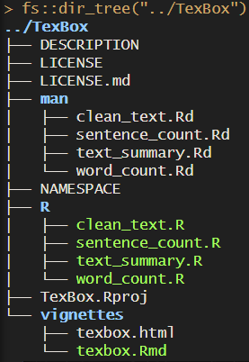

7 TexBox: A toolbox for text utilities in R
7.1 Why TexBox?
I decided to create an R package called TexBox: a small toolbox with functions for working with text. While writing reports in R Markdown, I sometimes wanted a quick way to check how much I had written. For example, I wanted to know the number of words or sentences in a text. I also wanted an easy way to remove unnecessary spaces. TexBox brings these small tasks together in one package.
I mainly had students in mind when I came up with the idea. Some assignments have a maximum word, sentence or character count, and it can be useful to check these before handing in a report. I hope TexBox can make those final checks a little easier, without having to use separate tools for every task.
7.2 What’s inside the toolbox?
TexBox currently contains four functions for working with text:
| Function | What it does |
|---|---|
word_count() |
Counts the number of words in text |
sentence_count() |
Counts the number of sentences in text |
clean_text() |
Removes unnecessary whitespace |
text_summary() |
Combines several text statistics in one overview |
The functions can be used separately, depending on what the user needs. For a quick word count, one function is enough. When someone wants a more complete overview, text_summary() combines several statistics in one table.
7.2.1 1. word_count()
The word_count() function counts the number of words in a character vector. It treats whitespace as the separator between words, so it can also process multiple text elements at once.
This returns a count of 2 words.
The function first checks whether the input is a character vector. It then processes each text element separately, removes unnecessary whitespace at the beginning and end, and splits the text at whitespace. Finally, length() is used to count the resulting words. An empty string returns zero, and missing values (NA) remain missing.
7.2.2 2. sentence_count()
The sentence_count() function counts the number of sentences in a text. It uses periods, exclamation marks and question marks (., ! and ?) as sentence separators.
This returns a count of 3 sentences.
The function splits the text at these punctuation marks and counts the non-empty text parts. It can also process multiple text elements. One limitation is that this is a relatively simple way of detecting sentence boundaries. An abbreviation such as Dr. can also be interpreted as the end of a sentence. This is something I would like to improve in the future.
7.2.3 3. clean_text()
The clean_text() function removes unnecessary whitespace. It replaces multiple spaces, tabs and line breaks with a single space, and removes whitespace at the beginning and end of the text.
The result is:
[1] "Hello world!"This function uses gsub() to find and replace repeated whitespace. After that, trimws() removes whitespace from the start and end. This can be useful when text has been copied from different sources or contains inconsistent spacing. It is worth keeping in mind that line breaks are also replaced by spaces, so the function is intended for cleaning text rather than preserving paragraph layout.
7.2.4 4. text_summary()
The text_summary() function combines several text statistics in one data frame. It reports the original text, the number of characters, the number of words and the number of sentences.
The result looks like this:
| text | characters | words | sentences |
|---|---|---|---|
| Hello world! | 12 | 2 | 1 |
The character count includes spaces and punctuation. This function brings the other functions together: it uses word_count() and sentence_count() and adds the character count with nchar(). This means users can get a quick overview of their text without having to run each function separately.
7.3 Developing an R package
I followed the package development steps from the HU Workflows Reader and the related example in R Packages: The Whole Game. The book uses a different example package, but I followed the same general workflow and applied it to my own idea, TexBox.
I started by creating the package structure with usethis::create_package(). This created the basic files and folders that R expects in a package. I then used usethis::use_r() to create a separate R script for each function. For example, usethis::use_r("word_count") created R/word_count.R. Keeping every function in its own file makes the package easier to navigate and maintain.
7.3.1 Package structure
The main files and folders in TexBox each have their own purpose:
| File or directory | Purpose |
|---|---|
R/ |
Contains the R scripts with the four functions |
man/ |
Contains the help files generated from the function documentation |
vignettes/ |
Contains the longer user guide for the package |
DESCRIPTION |
Contains package metadata, such as its name, title, version, author, description and license |
NAMESPACE |
Defines which functions are exported for users and manages the package namespace |
LICENSE and LICENSE.md |
Contain the information for the MIT License |
.Rbuildignore |
Lists files that should be left out of the built package |
The repository layout below shows how these files and folders are organised in the GitHub project.

I also chose the MIT License. This is a permissive open-source license that allows others to use, copy, modify and distribute the code, as long as the required copyright and license notices are kept.
The DESCRIPTION file is important because it tells R and other users what the package is, who created it and what it is for. It also records package details such as the version and license, and can list other packages that are needed. The four TexBox functions use functions from base R, so they do not need an additional package to perform the text operations. The NAMESPACE file has a different role: it controls which functions are available to package users. For TexBox, I marked all four functions with @export, so users can call them after loading the package.
7.4 Documenting the functions with roxygen2
I used roxygen2 to document the four functions. Roxygen2 allows documentation to be written directly above a function as special comments that start with #'. This keeps the explanation close to the code it describes.
For example, the documentation for word_count() includes a short description, an explanation of its input and output, an example and an export tag. A simplified part of the comments looks like this:
#' Count the number of words in text
#'
#' @param text A character vector containing text.
#' @return The number of words in each text element.
#' @examples
#' word_count("Hello world!")
#' @export
word_count <- function(text) {
# function code goes here
}The main tags I used were:
| Tag | Purpose |
|---|---|
@param |
Describes the function’s input arguments |
@return |
Describes what the function returns |
@examples |
Provides an example of how to use the function |
@seealso |
Links to related functions |
@export |
Marks the function as available to package users |
The comments start with #', which makes them different from regular R comments that start with #. After writing or updating these comments, I ran:
This processes the roxygen2 comments and automatically generates the .Rd help files in the man/ folder. It also updates NAMESPACE, including the export information for the functions marked with @export. Users can then open the help page for a function in R, for example with ?word_count.
7.5 A vignette as a user guide
Besides the help page for each individual function, I wanted TexBox to have one guide that explains the package as a whole. For this, I created a vignette with:
This created the file vignettes/texbox.Rmd. I titled the guide A Quickstart with TexBox. It introduces the package, explains what each function does and includes examples of how to use them. The code examples in the vignette can be run by users, which makes it a practical starting point for someone who has just installed the package.
After installing TexBox, the vignette can be opened from R with:
The vignette is different from the individual help pages: the help pages explain one function at a time, while the vignette gives users an introduction to the complete package.
7.6 Testing and validation
While developing TexBox, I tested the functions individually with different types of input. For example, I checked how they handled multiple text elements, empty strings, extra whitespace and invalid input. I also checked whether the punctuation used by sentence_count() was recognised as expected.
After making changes to a function, I used devtools::load_all() to load the current development version of the package into R. This meant I could test my changes without installing the package again after every adjustment. I used devtools::document() to update the generated documentation and devtools::check() to check the package as a whole.
The first package checks did not go smoothly. I initially had a problem with Rtools: the version installed did not match the version required by my R installation, so R could not find the make tool needed to build packages. After installing the matching Rtools version and restarting RStudio, this problem was solved. I also received a note because the RStudio project file was included among the top-level package files. I added it to .Rbuildignore, so it would not be included in the package build.
The final devtools::check() completed with:
| Check | Result |
|---|---|
| Errors | 0 |
| Warnings | 0 |
| Notes | 0 |
This was an important final check, because it showed that the package could be built and passed the package checks without errors, warnings or notes.
7.8 Reflection: What I learned
At the beginning, creating a complete R package felt like a big mountain to me. I found it difficult to know which tools and functions I needed for the final checks. Getting everything into GitHub was also more complicated than I expected, because I first had to leave the original project and later move the package files into the Git repository. The Rtools issue was another challenge, but solving it helped me understand that the tools used to build a package need to match the R version I am working with.
The sentence counter also has a limitation that I have not solved yet: abbreviations with a period, such as Dr., can be counted as sentence boundaries. This is something I would like to improve in a future version.
The biggest thing I learned is that an R package is not as intimidating as it first seemed. At its core, it is a set of R functions organised in a clear structure, with documentation and checks that make it easier for other people to use. I also learned that writing the function is only one part of the process. I need to check whether it works, whether it does what I intended, and whether someone else can understand and use it. Documentation and a vignette help make that possible.
I noticed that I can easily feel overwhelmed when I think about building a whole package at once. Breaking the work into smaller steps made it much more manageable. Next time, I would like to sketch out the structure and the steps before I start coding. Now that I have completed a package once, I have a better idea of what the process looks like and can work from that experience.
I also enjoyed the process more than I expected, and I would like to keep developing TexBox. Possible additions could include changing the capitalization of text, counting selected special characters, or adding helpers that apply Markdown formatting such as headings, bold or italic text. I would also like to improve the sentence counter so that it can recognise abbreviations more accurately. For now, TexBox is a small package, but it gives me a good starting point for building and sharing more of my own R tools in the future.